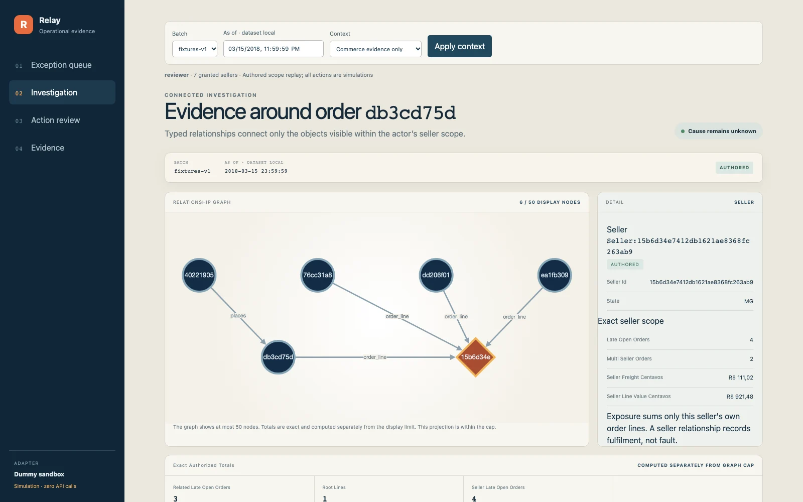

Connect the evidence
Authorized queries link orders and sellers, group related exceptions and calculate exact monetary exposure.
Deterministic softwareSupply-chain operations · Product case study
A workspace that connects orders, sellers and products—so operations teams can see which delivery issues belong together and prepare one evidence-backed case for review.
Conceptual illustration & animation generated with Higgsfield.
See the actual product below
01 / The business opportunity
An overdue-order dashboard is the starting point. To prepare a useful case, an analyst must gather seller and product records, find related late orders and calculate the affected value. The product brings that research into one workspace.
Order exports show the exception. Separate seller and product records provide context. The analyst connects them by hand, checks related orders, calculates exposure and assembles a review handoff.
The product opportunity: organize related exceptions as a shared case, with the evidence already connected.
Designed for: operations analysts and team leads at a marketplace.
This is a modeled customer workflow. Analyst time savings and financial impact require a customer study.
In one measured Olist snapshot, 603 late orders shared a seller. Those orders formed 139 disjoint seller groups.
Snapshot-based grouping potential, not an observed reduction in cases or analyst time. Deterministic queries produce this grouping; it is not an incremental AI result. See the calculation ↗
02 / The working product
Follow the operator’s journey through the actual application. Select a view to see what the user can do.

Open an order and explore the sellers and related orders connected to it. The detail panel explains each business relationship and shows exact seller exposure.
The software understands named business relationships: a customer places an order, an order contains lines, and each line belongs to a seller and a product. That shared vocabulary connects the UI, evidence tools and AI recommendations. PostgreSQL stores the facts; Cytoscape displays the relationships.
03 / From data to a decision
Software assembles and checks the facts. AI explores an evidence-linked recommendation. A reviewer makes the decision to create an internal investigation.
Authorized queries link orders and sellers, group related exceptions and calculate exact monetary exposure.
Deterministic softwareA bounded planner selects tools. An analyst works from their results and returns cited findings for validation.
Two AI stages + code checksA separate reviewer inspects the proposal. The application checks current permissions and eligibility before recording the case.
Human decision + transactionImport all five Olist files, validate their headers and preserve source provenance. Invalid rows are quarantined with reason codes. Historical timestamps and integer-centavo money values keep the investigation reproducible.
Product scope: create an internal investigation or save a recipient-free internal update draft. Customer messaging, refunds and changes to source commerce records remain outside the workflow.
04 / Engineering the product
The read API serves the operator’s workspace. A separate worker runs AI jobs, records progress and returns validated results. Select a component to explore its role.
Workspace & data
AI job processing
The worker relays committed DB jobs to SQS, consumes them, calls evidence tools and Bedrock, and writes checkpoints and results back to PostgreSQL.
This diagram describes the historical deployment. The AWS environment was retired after validation; the authored static demos remain available. The API has no Bedrock invocation permission, and the worker has no approval authority.
Demo network choices: public-IP Fargate tasks avoided a NAT gateway; RDS stayed in isolated subnets with TLS. CloudFront terminated browser TLS and forwarded to the ALB over HTTP. The shared CloudFront prefix list restricted origin traffic but did not authenticate one distribution. Single-AZ RDS and origin transport need production hardening.
Native service symbols come from the existing draw.io export. Editable draw.io source ↗ · Source-linked async path ↗ · Teardown verification ↗
05 / Built for reviewable decisions
Permissions, evidence, human review and durable execution are product features. They make each investigation understandable to the person responsible for acting on it.
Every seller on an order must be granted to the actor. The same scope applies to records, counts and graph nodes.
Typed outputs link findings to tool evidence. The system records the data snapshot, model, prompt and validation result.
A different, authorized reviewer checks the proposal. Execution rechecks current scope, evidence, revision and case eligibility.
Checkpoints, state transitions and case uniqueness keep job redelivery separate from repeated business actions.
A crash before acknowledgement followed by SQS redelivery produced one case. Repeat approval returned 409.
A Bedrock read timeout entered an unknown-outcome hold, preserving the record without an automatic paid retry.
Five known rejections opened the process-local breaker. The sixth job was refused before model admission.
The message reached the DLQ after five receives and triggered the CloudWatch alarm.
The planner chooses from allowlisted tools. The analyst returns findings. Strict Pydantic contracts and deterministic checks verify identifiers, references, arithmetic and synthetic provenance before a proposal enters review.
These examples explain implemented rules. They do not run a model or create a case.
Inspect the agent contracts ↗A validated proposal can enter review. The application creates the internal case after a different, scoped reviewer approves it and execution checks pass.
06 / Results & product learning
The project tested data ingestion, read performance, authorization, recovery and AI task quality. Each result informed a practical product decision.
From 99,441 source orders. 189 were quarantined with documented reasons. Full import: 9.3 seconds locally.
Import report ↗20 readers through CloudFront to one 0.25 vCPU API task. Historical deployment measurement.
Latency evidence ↗Deployed checks supplemented 20 local security and approval scenarios. Coverage is bounded by the tested scenarios.
Verification record ↗I compared a deterministic workspace (B0), flat-evidence AI (B1) and the ontology-assisted candidate on the same frozen questions and facts. Nova Lite and Nova 2 Lite formed a within-family generation comparison.
B0 scored 100% task success; the candidate’s best cell was 58.1%. The benchmark favored deterministic answers by construction. The next useful test is analyst usability and investigation time, with an assistance benchmark designed to measure incremental value.
This preserves the working evidence and review workflow while making further AI investment evidence-led.
Task success means every rubric rule passes. Select a generation and evidence mode.
Typed evidence: +2.3 percentage points vs flat evidence. Candidate relationship recall: 0.114.
Run of record: 18 October 2026. Local PostgreSQL on the owner’s laptop, real Bedrock in us-east-2, through the production consumer path. One run per cell; no statistical test. These are not model jobs on the deployed stack.
Quality boundaries: candidate precision was 1.000, but recall ranged from 0.066 to 0.530 against a 0.95 target. 68 of 404 jobs failed the strict JSON contract, with no repair loop. The candidate did not pass the frozen meaningful-margin rule over B0. Gold-v1’s expected answers use the same kind of deterministic queries as B0, so this benchmark cannot establish an AI advantage. Human timing and ROI remain untested.
Later validation finding: M6 recording exposed a synthetic-context finding accepted without synthetic evidence. A citation guard and five regression tests were added after the evaluation. These scores predate that correction. The gold freeze was owner-authorized; item-by-item review was not separately evidenced.
Complete results ↗ · Run-of-record artifact ↗ · Validation finding ↗
The full five-file Olist dataset supports the source-data pipeline. Public demos use authored fixtures only. Optional carrier and disruption context is synthetic, scenario-scoped and labelled in the UI. The source data does not establish a real cause of delay. Business-case assumptions and measured inputs ↗
07 / Product & engineering judgment
Build the smallest system that can explain its evidence, support a reviewer and test the product hypothesis. Add complexity when measurements justify it.
Decision: use a typed ontology over PostgreSQL, with Cytoscape for the relationship view.
Reason: the UI, tools and recommendations need consistent definitions of orders, sellers, evidence and actions.
Tradeoff: purpose-built, bounded traversal rather than a general-purpose graph platform.
Decision: use an outbox, SQS and a checkpointed Fargate worker.
Reason: keep the read path responsive while preserving job state through model latency and redelivery.
Tradeoff: more lifecycle states and queue operations. Deployed AI jobs took 10–16 seconds including queue and relay overhead.
Decision: code owns distinct counts, integer-centavo totals, permissions and execution; AI prepares cited findings.
Reason: the reviewer needs authoritative quantities and a traceable evidence trail.
Tradeoff: strict contracts surface model failures, and independent review adds a deliberate human step.
Decision: deploy to validate the system, retain evidence and tear down the environment.
Measured usage: the record evaluation’s inference cost was $0.3997 at list prices from returned usage. Estimated base infrastructure was $74.47/month while running; variable charges were unknown.
Tradeoff: the public demos use static fixtures, while the historical deployment is documented separately. These estimates are not the AWS invoice.
What I delivered
Users, workflow, business case, permitted actions and a measurable pilot recommendation.
React 19, TypeScript, TanStack Query and Cytoscape across queue, investigation and review.
FastAPI, PostgreSQL, bounded Bedrock stages, durable jobs, Cognito and CDK-managed AWS infrastructure.
Frozen comparisons, local MLflow tracking, load tests, deployed fault drills and verified teardown.
A complete operational AI case study, from the business question to the deployment.